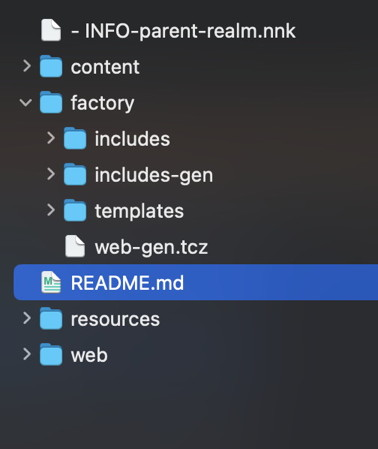

Create a Website using Notenik ↑
9. Establish Project Folder Structure
In addition to your Collection folder, you may need some additional folders, especially when building a website.
See the Nova sidebar screenshot above for a recommendation.
The files and folders depicted are described below.
- INFO-parent-realm.nnk
This is a file used by Notenik to recall your preferences when opening the project folder as a parent realm. It will be created by Notenik, as needed.content
This folder is the Notenik Collection containing all of your content.factory
This folder contains subfolders of files used to generate your website.includes
This subfolder contains include files that you wish to have appear in more than one of your merge templates.includes-gen
This subfolder contains includes that may be generated as part of your intermediate scripting output.templates
This subfolder contains your Merge Templates.web-gen.tcz
This is the Script file that will generate your website.
README.md
This contains some text providing a very concise introduction to the project folder contents.resources
This is a Notenik Collection that contains some information, and links, that you may find useful.web
This folder will contain the actual website generated by the script file, when it is executed.
Example
The Website starter pack will implement the structure described above.